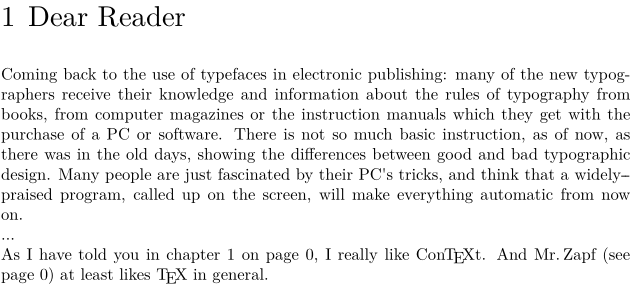

Contents
General Use
If you want to refer to any text element, you must first define the target's reference label. All titling commands and a lot of others take one as optional parameter, e.g.
\chapter[preface]{Dear Reader}
Then you can refer to this spot with
As I told you in \in{chapter}[preface] on \at{page}[preface], I really like ConTeXt...
That will typeset the text in braces and add the number of the refered element, e.g. "chapter 1 on page 1".
To define a reference label anywhere you can also use \pagereference[reference] and \textreference[reference]{text}. Everwhere where you can define one label, you can also define more at once, if you separate them with commas. It's also possible to use "namespaces" like [fig:cow].
If you activated interaction, references become links automatically.
Starting with ConTeXt 2012.06.22, there is a third command: \contentreference[reference][framedsettings]{text} which wraps the text argument inside a \framed. The main difference with \textreference where the text contains a \framed itself is that, when interaction is enabled, \contentreference places the top left of the target area at the top left of the framed box whereas \textreference uses its baseline.
showreferences
You can see References Visual debugging and \showreferences, when writing a long document with many cross references, to visualize the names given to various nodes.
Example
\chapter[preface]{Dear Reader} \pagereference[zapfquote]\input zapf \dots As I have told you in \in{chapter}[preface] on \at{page}[preface], I really like \ConTeXt. And Mr.\,Zapf (see \at{page}[zapfquote]) at least likes \TeX\ in general.
- 
Different layouts for different kinds of references
If you want less typing to get special formatting for the references to sections, equations, ... here's Aditya's recipe to do it.
Suppose that you want to get
- See equation (2.3) or section 4.2 .
where the slanted content is typeset automatically. You first need to define the formatting with \definereferenceformat:
\definereferenceformat[insec][text=section] \definereferenceformat[ineq] [left=(,right=),text=equation]
Then you can simply type
See \ineq[eq:some equation] or \insec[sec:some section].
A more automated solution uses the following macro:
\def\myin[#1:#2]{% \expandafter\ifx\csname in#1\endcsname\relax \writestatus{warning}{referenceformat in#1 not defined}% \in[#1:#2]% \else \csname in#1\endcsname[#1:#2]% \fi}
and requires you to write the following code:
See \myin[eq:some equation] or \myin[sec:some section].
| TODO: complete example would be better (See: To-Do List) |
Adjusting the level of referenced prefixes
When the default chapter and section prefixes are used, the chapters are prefixed by a number, so are the sections. When referring to a section using the command \in{section}[sec:foo] the chapter number is prefixed following by a dot and the according section number.
However, some styles do not show the chapter prefix while displaying the sections. In this case the referencing commands, like \in just output the section number, which is of course ambiguous.
To fix this problem, the command \setupreferencestructureprefix can be incorporated to adjust the prefixes displayed by the referencing commands.
Example
Given that \start/\stopchapter output Romannumerals prefixes (I,
II, III, …) and \start/\stopsection output Character prefixes (A,B, C, …), the following commands give the results provided in the comments.
\setupreferencestructureprefix [default] [prefixsegments=2:2] % nothing \setupreferencestructureprefix [default] [prefixsegments=2:3] % I \setupreferencestructureprefix [default] [prefixsegments=2:4] % I.A \setupreferencestructureprefix [default] [prefixsegments=3:4] % I.A \setupreferencestructureprefix [default] [prefixsegments=4:4] % A \setupreferencestructureprefix [default] [prefixsegments=5:4] % nothing
Adjusting the separator in between the referenced prefixes
To adjust the separator between the different structure levels in the referencing commands, like \in, the command \definestructureseparatorset is used.
Example
To change the separator between chapter and section from a dot to a hyphen use \definestructureseparatorset as follows.
\definestructureseparatorset [default] [,,-]
Putting a separator in the heading but not the reference
Sometimes you want to have a separator in the heading but not the reference. For example, you want section heading to look like "3. This is a new section" (with a dot after the section number), but references to the section should not have the dot (they should be like "In section 3 we found..."). Wolfgang Schuster gave a solution (for MkIV) on the list:
\defineprocessor[dostopper][right=.] \defineprocessor[nostopper][right=] \defineconversionset[stopperconversionyes][][dostopper->n] \defineconversionset[stopperconversionnop][][nostopper->n] \setuphead[chapter][sectionconversionset=stopperconversionyes] %\setupreferencestructureprefix[chapter][default][prefixconversionset=stopperconversionnop] \setupreferencestructureprefix[default][prefixconversionset=stopperconversionnop] \starttext \chapter[one]{First heading} \input knuth In \in{Chapter}[one] we learn. \stoptext
References to an external file
You can refer to referenced elements in an external file. MkIV requires for this the presence of the tuc-file of the referenced file. ConTeXt will catch the information to be included from this file.
Example
External files: hasseltbook.tex/pdf/tuc
The contents of hasseltbook.tex could be:
\starttext \startstandardmakeup \midaligned{\tfd Festivities in Hasselt} \stopstandardmakeup \startchapter[title=Euifeest,reference=euifeest] Something about the Euifeest.\index{Euifeest} \stopchapter \stoptext
In your document you can say:
\setupinteraction [state=start] \useexternaldocument [hia][hasseltbook][Festivities in Hasselt] \setupinteraction [state=start, color=green, style=bold] \starttext Most tourist attractions are described in \from[hia].\crlf A description of the \about[hia::euifeest] is found in \from[hia].\crlf The eui||feest is described on \at{page}[hia::euifeest] in \from[hia].\crlf See for more information \in{chapter}[hia::euifeest] in \from[hia]. \stoptext
Note how the link is established to the externalfile:
\command[symbolic-name::reference]
Related Modules
- Cross Referencing : Cross references in a (academic) text are either internal (linking to an other point inside the same document) or external (linking to a entity of the bibliography that points to a different document).
- Paragraph referencing : The pararef module understands a paragraph as a full closed block of one thought.
Related pages
- How to access the head numbers in a document.
| TODO: Describe what the arguments of the commands do and how the commands work (See: To-Do List) |